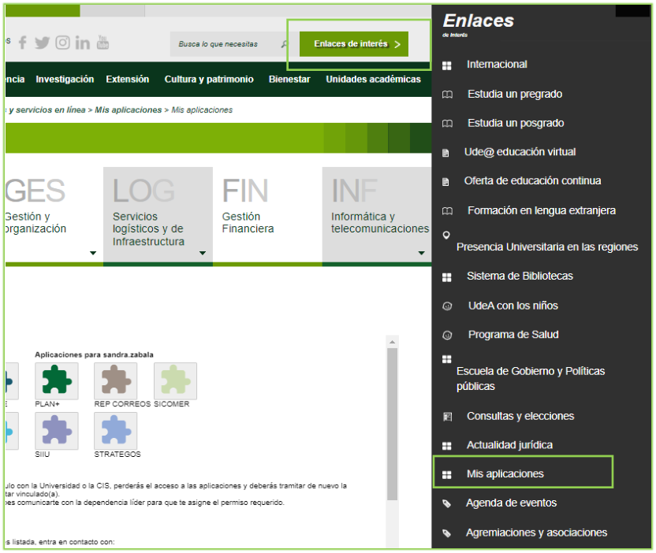
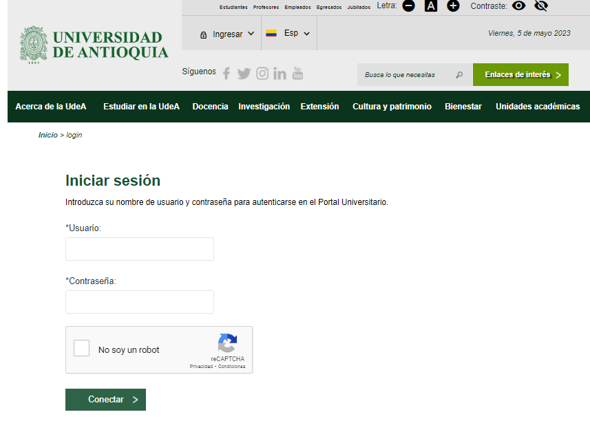
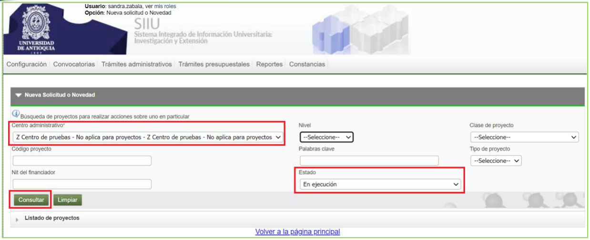
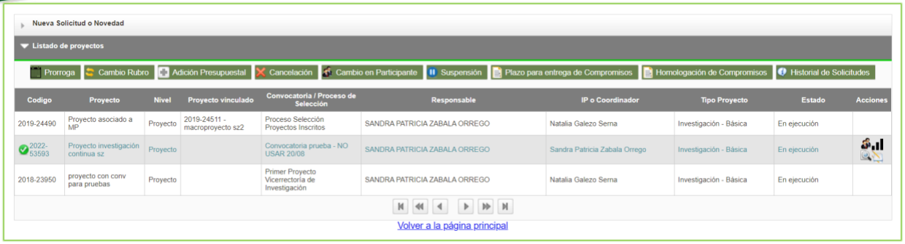
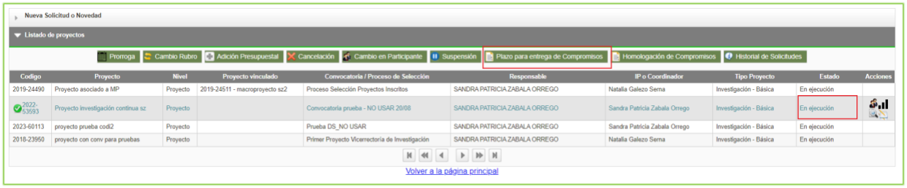
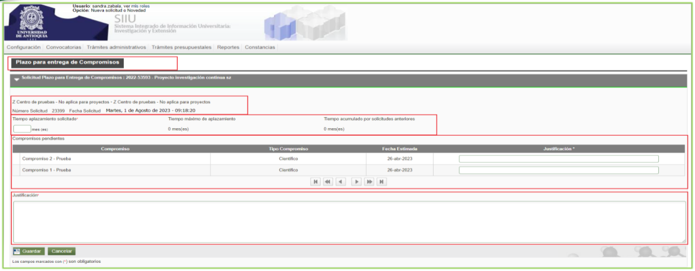
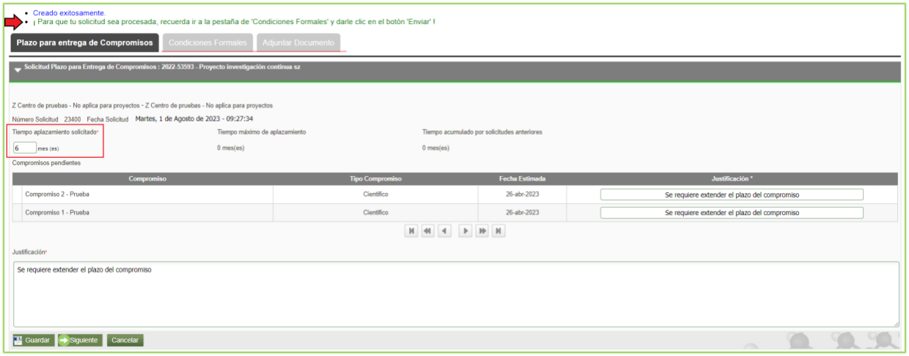
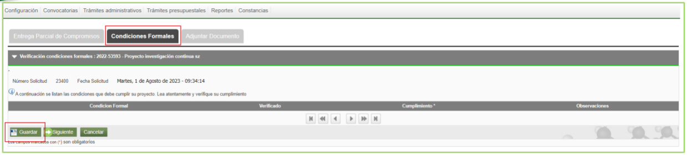
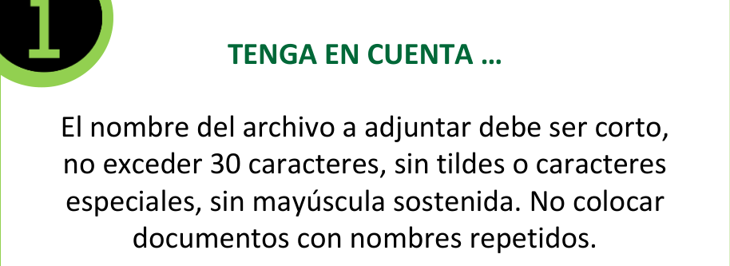
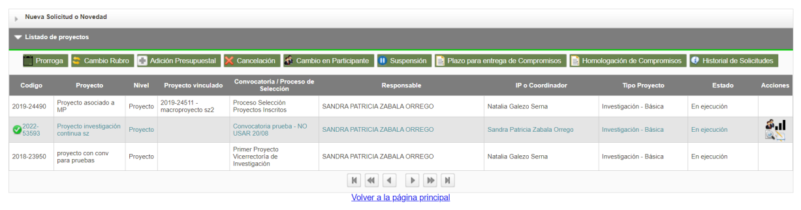

GUÍA PARA LA SOLICITUD DE PLAZO EN LA ENTREGA DE COMPROMISOS EN EL SIIU
Información de Control Documental
Código: VI-GU-22
Versión: 01 / 29-ABR-2024
Aviso legal institucional: La impresión o copia digital de este documento se considera "COPIA NO CONTROLADA". Solo se garantiza la actualización de la documentación en el sitio oficialhttp://www.udea.edu.co.
Contenido
- Definición
- Contenido
- 2.1. Requisitos para crear solicitud
- 2.2. Usuarios que intervienen en el proceso
- 2.3. Ingreso al SIIU
- 2.4. Trámites administrativos
- 2.5. Solicitud plazo para entrega de compromisos
- 2.5.1. Pestaña Condiciones formales
- 2.5.2. Pestaña Documento Soporte
- 2.5.3. Enviar solicitud
- 2.5.4. Editar Solicitud
- Nota de cambio
- Registro de Control y Firmas
1. Definición
Este documento se ha elaborado con el fin de ayudar y capacitar a los usuarios con rol de Investigador Principal para el Sistema de Información para la Investigación Universitaria – SIIU en la creación de solicitudes administrativas. Dado lo anterior se aclara que esta guía no hace parte de la normativa universitaria y solamente se debe utilizar como una herramienta que indica paso a paso el que se debe seguir.
2. Contenido
2.1 Requisitos para crear solicitud
- Tener a mano el código del SIIU del proyecto que obtuvo al momento de realizar la matrícula.
- El usuario con rol de investigador debe tener acceso a la opción para crear solicitudes administrativas.
- Identificar los compromisos a los cuales requiere hacer la solicitud.
2.2 Usuarios que intervienen en el proceso
- Usuario Investigador: Investigador Principal o responsable del Proyecto, es quien realiza la solicitud y la envía a través del SIIU.
- Usuario Administrador de Centro de Investigación: Jefe del Centro de Investigación del proyecto, es quien revisa, AVALA y APLICA la solicitud, según las recomendaciones del Comité Técnico del Centro; adicionalmente genera la adenda correspondiente para la solicitud.
- Usuario Vicerrectoría: Es el encargado de APROBAR las solicitudes en el SIIU para que sus cambios se vean reflejados en los proyectos.
2.3 Ingreso al SIIU
El investigador principal o responsable del proyecto debe autenticarse en el portal de la Universidad de Antioquia, http://www.udea.edu.co, buscar la opción aplicaciones y entre ellas elegir el SIIU, así:
- Ingresa al portal de la Universidad:
http://www.udea.edu.co, en el encabezado seleccione Ingresar >> Iniciar sesión (Ver figura 1).
 Figura 1 - Ingreso al portal de la Universidad de Antioquia
Figura 1 - Ingreso al portal de la Universidad de Antioquia
- Aparece pantalla para ingresar su usuario y contraseña, seleccione No soy un Robot (el sistema le puede pedir realizar validaciones) finalmente presione clic en el botón CONECTAR. (Ver figura 2).
 Figura 2 - Conectar al portal
Figura 2 - Conectar al portal
- Presione clic en la opción Enlaces de Interés y seleccione Mis aplicaciones, así:
Enlaces de interés → Mis aplicaciones. (Ver figura 3).
 Figura 3 - Enlaces de interés
Figura 3 - Enlaces de interés
- Se abrirá una ventana con las aplicaciones de la Universidad; seleccione SIIU. (Ver figura 4).

Figura 4 - Seleccione SIIU> Se abre una nueva ventana con la aplicación SIIU. Si la ventana no abre inmediatamente, es necesaria la configuración de ventanas emergentes en el navegador y seleccionar la opción que autorice el SIIU.
2.4 Trámites administrativos
Una vez se encuentre en SIIU ingrese por la opción: Trámites administrativos / Nueva solicitud o novedad. (Ver figura 5).
Definiciones Institucionales
- Solicitud: Son los cambios que se pueden realizar a un proyecto en: Tiempo, presupuesto, participante o compromisos, el cual ha sido aprobado por su (co)financiador interno, es decir, pertenece a la Universidad de Antioquia.
- Novedad: Son los cambios que se pueden realizar a un proyecto en: Tiempo, presupuesto, participante o compromisos, el cual ha sido aprobado por su (co)financiador externo a la Universidad de Antioquia.

Figura 5 - Nueva solicitud o novedadEl sistema presenta un formulario para realizar el filtro de búsqueda con los siguientes campos:
| Campo | Detalle |
|---|---|
| Centro administrativo | Campo obligatorio; seleccione de la lista desplegable el centro al que pertenece el proyecto. |
| Nivel | Lista desplegable con las opciones: Macroproyecto, Subproyecto, Proyecto. |
| Clase de proyecto | Lista desplegable con las opciones: Proyecto, Proyecto asociado a macroproyecto. |
| Código de proyecto | Ingrese el código del proyecto. |
| Palabras Clave | Ingrese palabras clave del proyecto. |
| Tipo de Proyecto | Lista desplegable con las opciones: Investigación, Extensión, Posgrados. |
| NIT del financiador | Ingrese el NIT del financiador del proyecto. |
| Estado | Lista desplegable con los estados del proyecto. |
| Botón Consultar | Presione una vez defina el criterio de búsqueda. |
| Botón Limpiar | Presione si desea borrar el criterio de búsqueda. |
En el filtro de búsqueda seleccione el Centro de Investigación y en el campo código del proyecto indique el código a gestionar; presione el botón Consultar. El proyecto debe encontrarse en estado En ejecución. (Ver figura 6).
 Figura 6 - Consulta por código del proyecto
Figura 6 - Consulta por código del proyecto
El sistema trae como resultado la información en las columnas del proyecto y habilita en la columna acciones iconos de consulta directa: - Ver participante - Ver etapas - Ver Detalle - Ver compromisos (Ver figura 7).

Figura 7 - Resultado de búsquedaSeleccione el proyecto de la lista sobre el cual realizará el trámite. (Ver figura 8).
El sistema despliega la barra de iconos que corresponde a las solicitudes administrativas:
| Solicitud | Detalle |
|---|---|
| Prórroga | Permite realizar prórroga a proyectos para iniciar o para postergar la fecha de finalización. |
| Cambio Rubro | Permite hacer cambios al valor de los rubros, crear subrubro. |
| Adición Presupuestal | Permite adicionar presupuesto al proyecto por parte del aportante. |
| Cancelación | Permite cancelar el proyecto (esta opción está inhabilitada). |
| Cambio en Participante | Permite realizar cambio en los participantes del proyecto. |
| Suspensión | (Esta opción se encuentra inhabilitada). |
| Plazo para entrega de Compromisos | Permite solicitar plazo para entregar los compromisos. |
| Homologación de Compromisos | Permite cambiar los compromisos. |
| Historial de Solicitudes | Permite ver el histórico de las solicitudes de un proyecto. |
Figura 8 - Consulta ejecutada y barra de solicitudes
2.5 Solicitud plazo para entrega de compromisos
Seleccione el proyecto y elija el botón Plazo para entrega de Compromisos. (Ver figura 9).

Figura 9 - Seleccionar solicitudEl formulario presenta las siguientes secciones para la solicitud: (Ver figura 10).
| Sección | Detalle |
|---|---|
| 1 | Nombre de la solicitud o trámite. |
| 2 | Código y nombre del proyecto. |
| 3 | Centro administrativo al que pertenece el proyecto. |
| 4 | Número de solicitud y fecha de creación. |
| 5 | • Tiempo aplazamiento solicitado: Ingrese el valor correspondiente en meses. • Tiempo máximo de aplazamiento: Indica el número de meses acumulados en la solicitud. • Tiempo acumulado por solicitudes anteriores: Indica el tiempo que le queda para realizar la solicitud de prórroga. |
| 6 | Compromisos pendientes: Indica los compromisos que se encuentran pendientes por realizar, con el tipo de compromiso y fecha estimada de entrega. |
| 7 | Justificación: Ingrese el detalle y motivo del plazo para el cumplimiento de los compromisos. |
| 8 | Botones Guardar, Cancelar. |

Figura 10 - Formulario Solicitud Plazo para entrega de compromisosDiligencie la información requerida en el formulario y presione el botón GUARDAR; el sistema le mostrará el mensaje de confirmación: "Creado exitosamente". (Ver figura 11).

Figura 11 - Guardar solicitud2.5.1. Pestaña Condiciones formales
Una vez guardada la información inicial, diríjase a la pestaña Condiciones formales. - El SIIU le mostrará las condiciones formales que tiene por cumplir. - En caso de no tener ninguna condición exigida, presione el botón Guardar y pase directamente a la siguiente pestaña Documento soporte. (Ver figura 12).

Figura 12 - Condiciones formales2.5.2. Pestaña Documento Soporte
En esta pestaña puede adjuntar los documentos de soporte que requiera la solicitud (cartas de justificación académica, avales o soportes técnicos).
- Presione el botón + Agregar ubicado al lado derecho de la pantalla. (Ver figura 13).

Figura 13 - Adjuntar documentoReglas para nombres de archivos
El nombre del archivo a adjuntar debe ser corto, no exceder 30 caracteres, sin tildes ni caracteres especiales, y sin mayúscula sostenida. No colocar documentos con nombres repetidos.
- El sistema abre una ventana para ingresar los detalles del documento:
- Nombre del documento
- Emisor
- Fecha de emisión
- Número
- Descripción
- Presione el botón Seleccionar Archivo y elija el documento desde su ordenador.
- Presione Cargar Archivo. (Ver figura 14).
- Finalmente, presione Guardar.

Figura 14 - Seleccionar archivo2.5.3. Enviar solicitud
Presione el botón ENVIAR para que la solicitud sea enviada al Centro de Investigación para su revisión y trámite formal. La solicitud queda en estado Pendiente de Aval.
> Nota: Si el acta de inicio original fue firmada por el Coordinador del grupo, una vez sea enviada la solicitud por el investigador principal, pasará primero a estado Pendiente de firma, para que el coordinador pueda ingresar al sistema y proceder a gestionarla electrónicamente.
En caso contrario, llegará directamente al Centro de Investigación en estado Pendiente de Aval para que el Jefe de Centro gestione el aval correspondiente.
Al presionar el botón ENVIAR, el sistema mostrará un mensaje de confirmación en la parte superior notificando: "Enviado exitosamente". (Ver figura 15).
 Figura 15 - Enviar solicitud
Figura 15 - Enviar solicitud
2.5.4. Editar Solicitud
Antes de enviar la solicitud administrativa, esta se puede editar en caso de que se cierre el sistema por inactividad o cuando sea necesario terminar de registrarla en otro momento:
- Ingrese por la opción:
Trámites administrativos / Seguimiento solicitudes y Novedades. (Ver figura 16).

Figura 16 - Editar solicitud- El sistema abre el formulario de seguimiento con los siguientes filtros:
| Campo | Detalle |
|---|---|
| Centro administrativo | Seleccione el centro al que pertenece el proyecto. |
| Tipo de trámite | Seleccione la solicitud administrativa a editar (Plazo para entrega de Compromisos). |
| Tipo Solicitud | Seleccione si es Interna o Novedad. |
| Estado | Seleccione el estado En edición (antes de enviar al centro). |
| Código o nombre del proyecto | Ingrese el código o nombre del proyecto que desea editar. |
| Rango de fecha inicial | Seleccione el rango de fecha inicial de creación. |
| Rango de fecha final | Seleccione el rango de fecha final. |
Figura 17 - Filtro de búsqueda para editar
- Presione Consultar, seleccione el proyecto a editar en la lista y continúe con el registro hasta su radicación final.
3. Nota de cambio
- No aplica para la primera versión.
Registro de Control y Firmas
| Rol | Nombre | Cargo / Dependencia | Fecha |
|---|---|---|---|
| Elaboró | Sandra Patricia Zabala Orrego | Contratista, Vicerrectoría Investigación | 16-FEB-2024 |
| Elaboró | Mauricio Toro Torres | Profesional 1, Vicerrectoría Investigación | 16-FEB-2024 |
| Revisó | Kerlin Yohana Bedoya Agudelo | Analista de Procesos, División de Arquitectura de Procesos | 29-ABR-2024 |
| Aprobó | Gloria Valencia Bustamante | Asistente, Vicerrectoría de Investigación | 29-ABR-2024 |